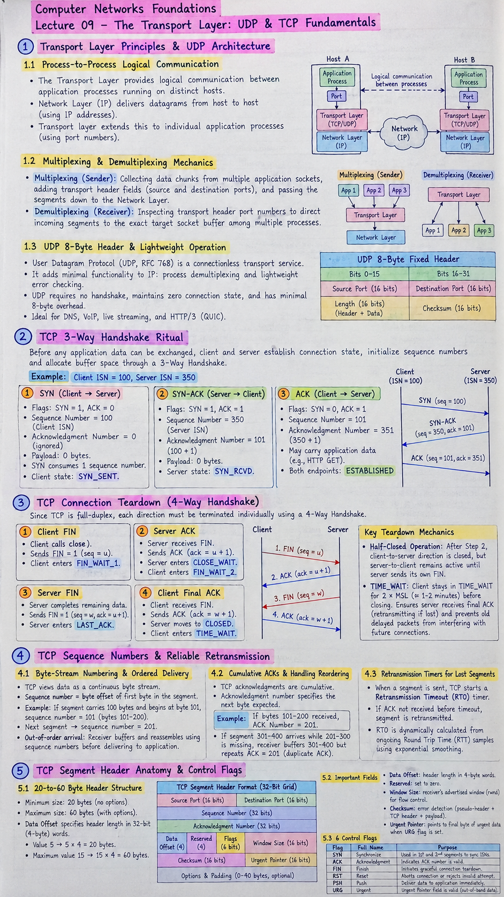

Short Notes & Visual Summary
Handwritten / quick summary notes for Lecture 09:

Click image to open high-resolution version in new tab
Transport Layer Principles & UDP Architecture
1.1 Process-to-Process Logical Communication
The Transport Layer provides logical communication between application processes running on distinct hosts. While the underlying Network Layer (IP) delivers datagrams from host to host (using IP addresses), the transport layer extends this to individual application processes (using port numbers).
1.2 Multiplexing & Demultiplexing Mechanics
- Multiplexing (Sender): Collecting data chunks from multiple application sockets, adding transport header fields (source and destination ports), and passing the resulting segments down to the Network Layer.
- Demultiplexing (Receiver): Inspecting transport header port numbers to direct incoming segments to the exact target socket buffer among multiple concurrent processes.
1.3 UDP 8-Byte Header & Lightweight Operation
The User Datagram Protocol (UDP, RFC 768) is an unvarnished, connectionless transport service. It adds minimal functionality to IP: process demultiplexing and lightweight error checking.
| Bits 0–15 | Bits 16–31 |
|---|---|
| Source Port (16 bits) | Destination Port (16 bits) |
| Length (16 bits, Header + Data) | Checksum (16 bits) |
UDP requires no handshake, maintains zero connection state, and has minimal 8-byte overhead, making it ideal for DNS, VoIP, live streaming, and HTTP/3 (QUIC).
TCP 3-Way Handshake Ritual
Before any application data can be exchanged over TCP, client and server must establish connection state, initialize sequence numbers, and allocate buffer space through a 3-Way Handshake.
Consider a client connecting to a server with Initial Sequence Numbers (ISNs) chosen independently:
- Client chooses ISN = 100
- Server chooses ISN = 350
2.1 Step 1 (SYN): Client Initialization (ISN = 100)
The client initiates the connection by transmitting a special TCP segment with the SYN flag set to 1:
Flags: [SYN=1, ACK=0]Sequence Number = 100(Client ISN)Acknowledgment Number = 0(or ignored; no data received yet)- Payload: 0 bytes of application data. The SYN segment consumes exactly 1 sequence number.
- Client state changes to
SYN_SENT.
2.2 Step 2 (SYN-ACK): Server Response (ISN = 350, ACK = 101)
The server receives the SYN, allocates socket buffers and variables, and replies with a segment acknowledging the client and proposing its own starting sequence number:
Flags: [SYN=1, ACK=1]Sequence Number = 350(Server's own ISN)Acknowledgment Number = 101(Acknowledges client SYN by requesting byte $100 + 1$)- Server state changes to
SYN_RCVD.
2.3 Step 3 (ACK): Client Confirmation (ACK = 351, Established)
The client receives the SYN-ACK, completes the handshake, and acknowledges the server's sequence number:
Flags: [SYN=0, ACK=1]Sequence Number = 101Acknowledgment Number = 351(Acknowledges server SYN by requesting byte $350 + 1$)- This segment may already carry client application payload data (e.g., an HTTP GET request).
- Both endpoints now transition to the
ESTABLISHEDstate, ready for bidirectional full-duplex data streaming.
TCP Connection Teardown (4-Way Handshake)
Because a TCP connection is full-duplex (two independent byte streams flowing in opposite directions), each direction must be terminated individually using a 4-Way Handshake.
3.1 Step 1 & Step 2: Client FIN and Server ACK
- Step 1 (Client FIN): The client application calls
close(). The client TCP sends a segment with FIN=1 ($seq = u$). This signals that the client has no further application bytes to transmit. The client entersFIN_WAIT_1. - Step 2 (Server ACK): The server receives the FIN and immediately responds with an ACK ($ack = u + 1$). The server enters
CLOSE_WAIT, and the client receives the ACK to transition intoFIN_WAIT_2.
3.2 Step 3 & Step 4: Server FIN and Client Final ACK
- Step 3 (Server FIN): The server application completes any remaining outgoing data transfers. Once drained, the server calls
close()and transmits its own FIN=1 segment ($seq = w, ack = u + 1$). The server transitions toLAST_ACK. - Step 4 (Client Final ACK): The client receives the server's FIN and transmits the final ACK ($ack = w + 1$). The server receives this ACK and moves to
CLOSED.
3.3 Half-Closed State & Connection Lifecycle
- Half-Closed Operation: After Step 2, the client-to-server direction is closed, but the server-to-client channel remains fully active until the server sends its own FIN.
- TIME_WAIT Safety Buffer: The client stays in
TIME_WAITfor $2 \times \text{MSL}$ (Maximum Segment Lifetime, $\approx 1-2$ minutes) before closing permanently. This ensures the server receives the final ACK (retransmitting it if lost) and prevents old delayed packets from interfering with future connections reusing the same ports.
TCP Sequence Numbers & Reliable Retransmission
4.1 Byte-Stream Numbering & Ordered Delivery
TCP views data not as discrete isolated packets, but as an unstructured, continuous byte stream. Sequence numbers represent the byte offset of the first byte in the segment's data payload:
- If a segment carries 100 bytes of payload and begins at byte 101, its Sequence Number = 101 (covering bytes 101 through 200).
- The subsequent segment will carry Sequence Number = 201.
- Handling Out-of-Order Arrival: If segments arrive shuffled due to differing network paths, the receiving TCP stack places them into their correct position in the socket reassembly buffer using their sequence numbers before delivering an unbroken byte stream to the application.
4.2 Cumulative ACKs & Handling Reordering
TCP acknowledgments are cumulative: an acknowledgment number specifies the sequence number of the next byte the receiver expects to receive:
When the receiver successfully ingests bytes 101 through 200, it responds with:
$$\text{ACK Number} = 201$$This explicitly confirms receipt of all bytes up to 200 and requests byte 201 onward.
If Segment 301–400 arrives while Segment 201–300 is delayed or lost, the receiver buffers 301–400 but repeats ACK = 201 (duplicate ACK), indicating a gap in the byte stream.
4.3 Retransmission Timers for Lost Segments
To ensure reliable delivery across lossy networks:
- Whenever TCP transmits a segment, it tracks a Retransmission Timeout (RTO) timer.
- If an ACK covering the segment is not received before the timer expires, TCP assumes the segment (or its ACK) was lost in transit and automatically retransmits the segment.
- RTO is dynamically calculated from ongoing Round Trip Time (RTT) sample measurements using exponential smoothing.
TCP Segment Header Anatomy & Control Flags
5.1 20-to-60 Byte Header Structure
A TCP segment header has a minimum size of 20 bytes (when no optional fields are appended) and can scale up to 60 bytes with TCP options (such as MSS negotiation, Window Scaling, or SACK):
| Bits 0–7 | Bits 8–15 | Bits 16–23 | Bits 24–31 |
|---|---|---|---|
| Source Port (16 bits) | Destination Port (16 bits) | ||
| Sequence Number (32 bits) | |||
| Acknowledgment Number (32 bits) | |||
| Data Offset (4 bits) | Reserved (4 bits) | Flags: URG, ACK, PSH, RST, SYN, FIN | Window Size (16 bits) |
| Checksum (16 bits) | Urgent Pointer (16 bits) | ||
| Options & Padding (0–40 bytes, optional) | |||
5.2 Data Offset, Window Size & Checksum Fields
- Data Offset (4 bits): Specifies TCP header length measured in 32-bit (4-byte) words. A value of 5 indicates $5 \times 4 = 20\text{ bytes}$ (standard header without options). The maximum value of 15 allows $15 \times 4 = 60\text{ bytes}$.
- Reserved (4–6 bits): Reserved for future protocol enhancements, set to zero.
- Window Size (16 bits): Carries the receiver's advertised Receive Window (rwnd) for flow control, indicating available space in bytes in the receiver's socket buffer.
- Checksum (16 bits): Error-detection field covering the TCP pseudo-header, TCP header, and segment payload.
- Urgent Pointer (16 bits): Points to the sequence number of the final byte of urgent data when the URG flag is set.
5.3 The 6 Control Flags (URG, ACK, PSH, RST, SYN, FIN)
| Flag | Full Name | Functional Purpose |
|---|---|---|
| SYN | Synchronize | Used strictly in the 1st and 2nd segments of connection establishment to synchronize initial sequence numbers (ISNs). |
| ACK | Acknowledgment | Indicates that the Acknowledgment Number field contains a valid value. Set on almost all segments after connection setup. |
| FIN | Finish | Initiates graceful connection teardown, signaling that the sender has no more application data to transmit. |
| RST | Reset | Aborts an active connection abruptly or rejects an invalid connection attempt (e.g., segment sent to a closed port). |
| PSH | Push | Directs the receiver TCP to deliver buffered data to the receiving application immediately without waiting for buffers to fill. |
| URG | Urgent | Indicates that the Urgent Pointer field is valid, pointing to high-priority out-of-band data (e.g., Telnet interrupt command). |
Original PDF Notes
Below is the original PDF document for reference: